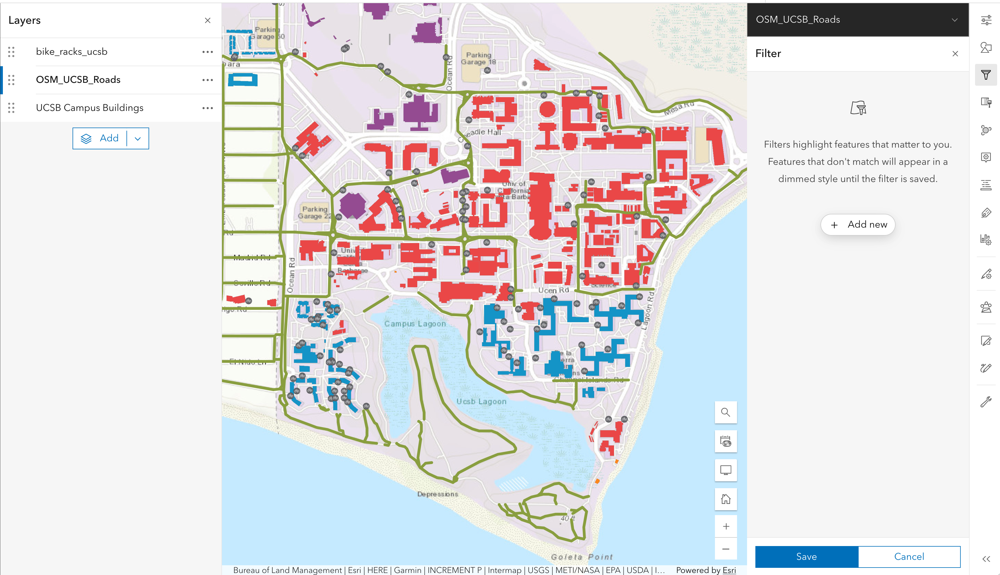

I want to make a map
The goal of this lesson is to demonstrate how to make a simple map, suitable for inclusion in a publication, using ArcGIS Online. As an exercise, you will be creating a map that reflects your personal experience biking on the UCSB campus. We will follow a typical workflow of:
- Start with a basemap
- Add feature layers from the UCSB campus
- Draw annotations on top of the map
- Prepare the map for presentation and export it
As we will describe under Other approaches at the end of this lesson, there are many tools and techniques that can be used to create such a map. An advantage of using a GIS tool such as ArcGIS Online, and the central motivation for using GIS in this lesson, is that a GIS tool allow maps elements to be interpreted and manipulated as data, and in this way spatial analysis becomes possible.
ArcGIS Online is but one of many GIS tools in existence. We use it in this lesson because it is in wide use in both commercial and academic settings. However, it is important to recognize that it is a proprietary and closed system that requires a paid subscription to use. We note limitations and ramifications of using ArcGIS Online on the reproducibility and citability of one’s work under Caveats of using ArcGIS Online at the end of this lesson.
Our goal for today
Our goal is to develop a map of the UCSB campus that illustrates the current bicycle infrastructure, specifically highlighting bike paths and racks. Additionally, the map will incorporate information about related incidents (crash, theft, …) and proposed improvements.
At the end of our session we should end up with something like this
{kind=link}
Our final interactive map is also embedded below:
As we will discuss at the end of this lesson, there are many ways of making such a map without using a GIS tool. In fact, in many cases GIS is overkill, both because most of the features GIS tools provide will not be used and because the GIS interface can be cumbersome. But an advantage of GIS is that it opens up the possibility of treating map elements as data, and that in turn opens up and provides an introduction to the world of spatial analysis.
Introduction to ArcGIS Online
A brief tour of the interface.
Log on to ArcGIS Online
Sign on with your UCSB NetID. You may need to enter “ucsb” into the url box. Do not use the ArcGIS login! This is for users who do NOT have a UCSB NetID.
{kind=link}
You should have a similar landing page indicating that you are using the ArcGIS online under the UCSB license. You may need to authenticate with DUO on your phone.
Tour of the user interface
The main organization page lists the campus administrative contacts and open data groups available on campus. You can also see the latest content published by users on your campus.
Along the top of the page, is the main tool bar.
{kind=link}
Homewill take you to the main landing page when you first sign in.- The
Gallerycontains items from our ‘featured content’ group Groupsare a list of groups which you can create or join. Some are invitation only. These are popular when you are working in group projects. For this workshop, we have created a group called From Maps to Analysis which contains most of the data layers we will be using.Contentis where your created or uploaded content is listed. You can make folders in here to organize your layers and features.Notebooksis ESRI’s version of a JupyterHub-like environment. You can use ArcPy here. This may not be available to you based on your user role.Organizationwill take you back to our main page. This is not the same as Home.Scene, orScene Vieweris where you can create 3D GIS scenes, such as neighborhood models and digital twins.Map, orMap Vieweris where you can create 2D maps. We will be focusing on using the Map Viewer for this workshop.
The Map Viewer
Open a new, empty map by clicking Map on your top menu bar.
{kind=link}
Main Map components
In the Map Viewer there is a menu bar in the left column. This is where you can add components to your map. The way to think about a map is that it is made of different layers that are added on top of each others. Each layer add a specific information to your map. In our example, we will have a layer for the bike paths, one for the bike racks, one for the buildings, and so on… The base layer is special and often made of an image (but does not have to be). It is called a basemap. Here are the main components of your map:
Basemap: there are many provided by ArcGIS OnlineLayers: your own and/or those shared by othersLegend: The symbology used on your mapSave and open...: Where you save your content
Basemap
The goal of a basemap, is to provide context in terms of location and/or theme. In ArcGIS Online, a new map will always open with a basemap. Esri has about 20 different basemaps available. We will start with the default: the Topographic basemap.
{kind=link}
In general, make sure you choose a basemap that is easy to follow and accurate in relation to the goal of your map. Avoid using busy basemaps that provide information not relevant to the purpose of your map. Additionally, choose a basemap that does not visually conflict with or override the layers on top. The message of your map is whatever you layer and annotate on top of the basemap; the basemap is there only to provide context.
Feature layers
Feature layers are the layers you add on top of your basemap. They are the main information your map is aiming at communicating. In ArcGIS, When you add an existing layer to your map, it will show up under your Layers. When you want to see the layer properties, you can either use the menu on the right hand column to view its properties or use the ... (we call this a “meatball” menu) next to the layer to open the same panel.
Save your work - Save early, save often
{kind=link}
save icon- There will be a blue dot next to the
saveicon until you save - You can organize your all of your content into folders – Let’s make a folder for all of our work today. Bike Map Workshop
- Once you save, more options will be available
- ArcGIS Online will not auto-save your map
UCSB bike infrastructure map
With that introduction, you now have the opportunity to start creating your own map. The goal here is to create a map of the bike infrastructure on campus (bike lanes and line, bike racks as points, buildings as polygons) and to then annotate on top of that some of your personal experience as a bicyclist or pedestrian on campus.
Step 1: Add layers to your map
Import lines Feature layer (bike paths)
From the Layers panel, click on the add layer button. Search My organization for OSM_UCSB_Roads. There should be only one result.

bike_racks_ucsb to your map.
Import points layer (bike racks)
{kind=link}
UCSB Campus Buildings layer from there.
Add a layer via Groups
{kind=link}
Reorder layers
After importing the three layers, you’ll notice they might not display optimally. There’s a GIS convention for layer ordering that helps ensure all features remain visible:
Layer Order Convention (top to bottom):
- Points (e.g., bike racks) - should be on top
- Lines (e.g., bike paths) - in the middle
- Polygons (e.g., buildings) - at the bottom
This ordering ensures that smaller features aren’t hidden beneath larger polygon areas.
For our map, the recommended order from top to bottom should be:
bike_racks_ucsb(top)OSM_UCSB_Roads(middle)UCSB Campus Buildings(bottom)
To reorder the layers, click and hold on a layer name in the Layers panel, drag it to the desired position, and release.
{kind=link}
Accessing the underlying data
Feature layers are driven by data. Each point, line, or polygon has associated with it a row in an attribute table providing information on that specific record.
For example, if you click on the three dots on the right of a feature layer you can access its attribute table by selecting Show table.
{kind=link}
Your data can be visualized, selected, or analysed based on the columns of the attribute table. We will see later how you can leverage these attributes to set the symbology of a layer according to categories or quantities that are in the attribute table. You can also compute new attributes either based on other attributes or by performing analysis with other layers’ information. We will cover analysis tools in our second workshop.
Now that you have added the layers to your map, it’s a good idea to save it again.
{kind=link}
In there, you can add a title, tags, and a short description of your map.
Step 2: Customize symbology & transparency
After adding our three layers, we have some work to do to make the map more readable. First, let’s adjust the symbology of the bike racks layer to reduce its size and change its symbol to a bike icon.
- Click on the layer
bike_racks_ucsbto open its properties panel. - On the panel
Symbology, click onEdit layer style. - Look for the
② Pick a styleoption and selectStyle options. - Click on the pencil icon next to
Symbol styleto open the symbol selector.
There, we have multiple options to customize the symbol. Let’s click on the current symbol chevron to open the full symbol gallery.
From the menu, we can select several categories of symbols. Let’s select the Government category and look for a bike parking icon. Click on the Done button to apply the changes and return to the symbol style panel.
{kind=link}
To change the size of the symbol, we can use the Size slider to reduce it to a more appropriate size. First, select Adjust size automatically to ensure the symbols to scale as you zoom in and out of the map. Then, you can use a custom size by moving the slider or entering a value; in our case, we selected 5.68 px.
In ArcGIS Online, every time you select the Adjust size automatically option, it will reset the size slider to a default value. So make sure to select your desired size after enabling that option. Also note that the size you choose is function of the current scale/zoom you are using on the map when you set this value for the first time.
{kind=link}
Adjust style based on attribute
Now, what if we wanted to adjust the symbology based on an attribute? Let’s say we wanted to fill each building with a different color based on its use (academic, residential, administrative, etc.). We can do that by changing the style of the UCSB Campus Buildings layer.
- Click on the layer
UCSB Campus Buildingsto open its properties panel. - On the panel
Symbology, click onEdit layer style. - Look for the
① Choose attributesoption and select+ Field. - Select the attribute
b_use, which stands for building use, and click onAdd.
{kind=link}
As a result, you will see that the buildings are now filled with different colors based on their use. You can further customize the colors by clicking on the color ramp and selecting a different one.
{kind=link}
These field names are pretty cryptic. This is often the case with public data. If you want to learn more about this data, navigate over to the feature layer’
filter layer based on attribute
Finally, we are interested in displaying bike paths from the OSM_UCSB_Roads layer that also contains roads, pathways and other features. We can filter the categories we are interested in using the filter function on the right sidebar.
Click on the layer
OSM_UCSB_Roadsto select it.Click on the
Filterbutton on the right sidebar (third from top).
Click
Add newIn the condition box, choose the
highwayfield and theincludesand selectcyclewayDon’t forget to save with the button at the bottom!
{kind=link}
As a result, you will see that the bike paths are now more transparent for higher speed limits and less transparent for lower speed limits.
Select a better basemap
After adding the layers and customizing their symbology, we have a good, almost ready map. However, the current basemap (Topographic) is a bit too busy and makes it hard to see the features we added. Let’s change it to a simpler basemap using the Basemap option in the left menu bar.
{kind=link}
From the basemap gallery, we can select a simpler basemap. For this example, we selected the Light Gray Canvas basemap, which provides a clean background that makes our features stand out.
{kind=link}
Don’t forget to save your map after making these changes!
Step 3: Annotate the map
In addition to bringing external sources of information into a map (whether in the form of a basemap or additional feature layers), it is common to want to add new information. In many cases it is better to think of the new information as data, and to store it in its own feature layer. We will be describing this approach in the next workshop. For our purposes here, though, we will take the more straightforward approach of simply drawing on the map. The hand-drawn features will appear in what ArcGIS Online calls a sketch layer.
{kind=link}
After adding the sketch layer to your workspace, a new menu will appear in the right column with drawing tools and configuration options.
{kind=link}
Drawing points in a sketch layer
- Draw points where you were in a (near-)accident on a bike path, either as bicyclist of pedestrian.
Zoom in to the location and add a point with the point drawing tool. You can customize the symbol, size, and color of the point in the sketch layer menu before adding it to the map. Put as many points as you like.
In our example, we add the following settings to the point symbol:
- Size: 48 px
- Vector marker (background): Blue (#2132cf)
{kind=link}
Draw a line where you think there should be a bike path but isn’t.
From the sketch layer menu, select the line drawing tool. Click on the map to start drawing the line, and click again to add vertices. Double-click to finish the line.

You can customize the line symbol in the sketch layer menu before adding it to the map. In our example, we add the following settings to the line symbol:
- Width: 5 px
- Dotted line pattern
- Color: Light blue (#00c8ff)
{kind=link}
Draw a circle where you think there should be a bike parking lot but isn’t.
Similarly to the line drawing tool, select the circle drawing tool from the sketch layer menu. Click on the map to draw the circle, and click on the select tool to finish the shape. You can also customize the symbol after drawing it by selecting it and changing its properties in the sketch layer menu. In our example, we add the following settings to the circle symbol. You can type in the values, or interactively select as in the animated figure.
- Fill color: Red (#d13434)
- Fill transparency: 38%

Finally, let’s rename the sketch layer to Annotations to better reflect its purpose. Click on the three dots next to the sketch layer and select Rename. Enter the new name and click OK.
Save your map after making these changes
Step 4: Prepare the map for publication
Almost there! At this point you’re ready to start packaging your map for publication.
To do that, you need to look for the Print option in the left menu bar.
{kind=link}
For exporting the map you have two options:
Layout: This option allows you to create a more complex layout with additional map elements such as title, legend, scale bar, north arrow, etc. You can choose from several pre-defined templates or create your own custom layout.Map only: With this option, you can export just the map itself without any additional elements. You can choose the file format (PNG, PDF, etc.) and the resolution of the exported map.
For our purposes, we will select the Layout option to create a more complete map for publication.
In the layout menu, you can change the title of the map, select a Template (which is basically a standard page size and orientation), and select the File format for the export (e.g., PNG, PDF).
You can also customize more the layout by enabling the Advance options panel. You can set the scale, add an author name, include copyright information, increase or decrease the resolution, indicate the output spatial reference, and select to include legend, north arrow, and scale bar.
Adjust the zoom and position of the map in the preview window to ensure everything is visible and well-framed.
If your map is intended for print publication, it is recommended that you set your DPI value to 300 dpi. For web or screen display, 96 dpi is generally sufficient and will produce a smaller file size.
{kind=link}
{kind=link}
{kind=link}
Other approaches
There are many ways of making a simple map. Here are some alternative approaches.
By screen grabbing: Create a base layer by screen grabbing a source map displayed in a web browser window (e.g., Google Maps). Then, using a drawing tool (a dedicated drawing tool such as Adobe Illustrator, or any program that provides drawing tools such as Microsoft PowerPoint), import the screen grab and draw on top of that. It is possible to capture the base layer at higher-than-screen resolution by zooming in, panning and screen grabbing it in pieces, and merging the pieces using a tool like Adobe Photoshop. And by measuring distances between known points, and/or carefully keeping track of scale, it is possible to accurately position figures and annotations.
Google Earth: An in-browser tool that allows you to view and add data layers with high-resolution Google imagery. There are some fee based services in Google Earth, and you may need a plan to view some features. Historical satellite imagery is available.
Mapbox: Mapbox has more features available for mobile users. Maps can be viewed and edited on mobile devices.
OpenStreetMaps: OpenStreetMaps is open source and managed and created by users worldwide. This data can also be downloaded and added to GIS software like ArcGIS Pro or QGIS.
CalTopo comes with a variety of base layers, including multiple types of topographic maps, and it provides a number of drawing and annotation tools. Certain features may require a subscription.
Caveats of using ArcGIS Online
Two central concepts of open science are reproducibility, by which we mean the ability to inspect (if not re-execute or replicate) all the data sources, code, protocols, and other materials used in a study, and citation, the ability to persistently and openly refer to and access those same data sources, code, protocols, and other materials. Unfortunately, a proprietary, closed tool like ArcGIS Online fails to support open science in three important ways.
The artifacts one works with in ArcGIS Online (layers, maps, StoryMaps, etc.) are stored internally and inaccessibly in an unknown, proprietary format. The data can be viewed or otherwise accessed through ArcGIS Online to be sure, and perhaps edited if one has a paid subscription, but the data in its raw form is inaccessible.
The storage, commitment to persistence, and access costs of artifacts stored in ArcGIS Online are entirely dependent on a commercial company.
Artifacts such as maps can be identified by URLs, but not by the DOI identifiers that are commonplace in scholarly communication, and which are often required by publishers, citation tracking systems, and academic promotion committees.
An additional caveat that applies to all UI-based GIS tools, not just ArcGIS Online, is that operations are performed interactively. Unfortunately, interactive use does not create any kind of historical log of actions performed. While this style of interface allows for free and fast exploration, it comes at the cost of being able to reliably re-create processing steps. Notice in this workshop that the sequence of actions used to create your map are not recorded anywhere. For a map this may not matter, nor may it matter for a one-off analysis, but if you wanted to, say, apply the same set of steps to a new map, or if your work within ArcGIS Online involved spatial analysis, it will likely be critical that the processing steps be recorded in such a way that they can be inspected if not re-run.
ArcGIS Online is a powerful tool, to be sure. But to use it in a way that supports open, reproducible science, we recommend that you:
Export newly-created feature layers as Shapefiles, and/or export attributes tables as CSV files, and make those files preserved and citable by storing them in a data repository. Do not consider ArcGIS Online to be any kind of long-term repository.
Express significant computations programmatically, so that they can be inspected and re-run.